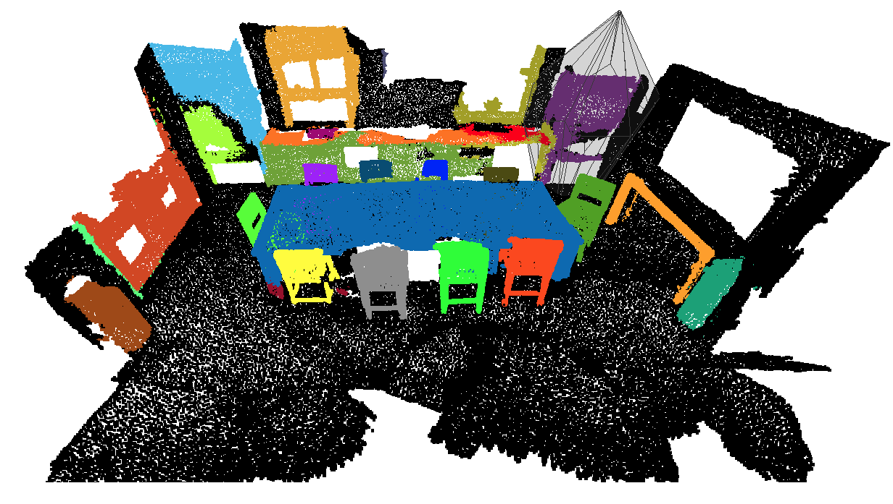

TL;DR: A novel instance parameterization for top-down instance segmentation on point clouds.
Abstract
We introduce a method for instance proposal generation for 3D point clouds. Existing techniques typically directly regress proposals in a single feed-forward step, leading to inaccurate estimation. We show that this serves as a critical bottleneck, and propose a method based on iterative bilateral filtering with learned kernels. Following the spirit of bilateral filtering, we consider both the deep feature embeddings of each point, as well as their locations in the 3D space. We show via synthetic experiments that our method brings drastic improvements when generating instance proposals for a given point of interest. We further validate our method on the challenging ScanNet benchmark, achieving the best instance segmentation performance amongst the sub-category of top-down methods.
Convex hulls in 2D
Query a single instance: Given query points (red points), we approximate the target instance with convex hull.

Query points
Points inside convex hull
Points outside convex hull
Polytopes
Convex hull
Interactive Results in 3D
Loading, please wait...Paper
NeuralBF: Neural Bilateral Filtering for Top-down Instance Segmentation on Point Clouds
Weiwei Sun, Daniel Rebain, Renjie Liao, Vladimir Tankovich, Soroosh Yazdani, Kwang Moo Yi, Andrea Tagliasacchi
In ArXiv.
@article{sun2022neuralbf,
title = {NeuralBF: Neural Bilateral Filtering for Top-down Instance Segmentation on Point Clouds},
author = {Weiwei Sun, Daniel Rebain, Renjie Liao, Vladimir Tankovich, Soroosh Yazdani, Kwang Moo Yi, Andrea Tagliasacchi},
booktitle = ArXiv,
year = {2022}}
Acknowledgements
This work was supported by the Natural Sciences and Engineering Research Council of Canada (NSERC) Discovery
Grant, NSERC Collaborative Research and Development Grant, Google, Digital Research Alliance of Canada, and
Advanced Research Computing at the University of British Columbia.
This template was originally made by Phillip Isola and Richard Zhang for a colorful project, and inherits the modifications
made by Canonical capsules.
The code can be found here.